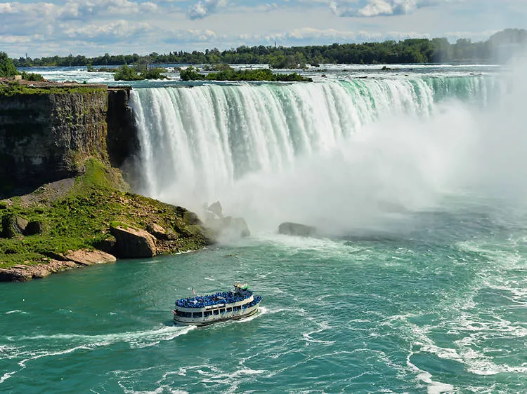
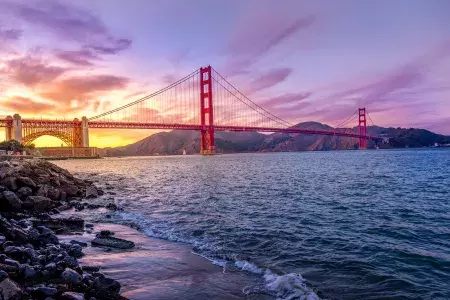
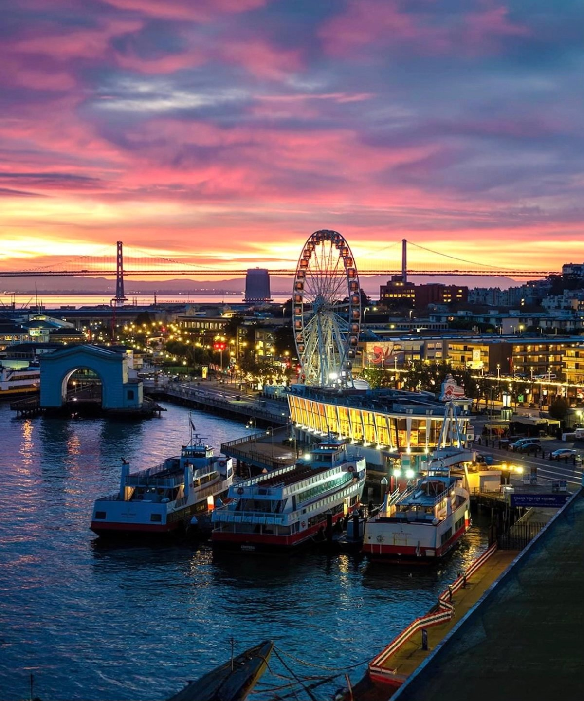

America
Discover the diversity of America with these exciting destinations:
United States
Walt Disney World in Orlando

Orlando, Florida is a hub of amusement parks, but none is so popular as Walt Disney World. Many travelers don’t realize that Walt Disney World is actually made up of several distinct theme parks, including the Magic Kingdom, Epcot, Hollywood Studios, Animal Kingdom and the Blizzard Beach Water Park. Visitors will be able to enjoy thrill rides, watch Broadway-quality shows and explore the nightlife, cuisine, shopping and entertainment at Disney Springs.
National Mall | Washington DC

Immaculately maintained by the National Park Service, the National Mall and Memorial Parks feature more than 1,000 acres of must-see monuments, sites and green space. While the Washington Monument towers above all else—quite literally, the city doesn’t zone for buildings taller than the marble icon—the Lincoln Memorial, Thomas Jefferson Memorial, Vietnam War Memorial and Martin Luther King Jr. Memorial are just as magnificent.
Niagara Falls | New York State

Situated on the border of New York and Canada, the three waterfalls (Horseshoe Falls, American Falls and Bridalveil Falls) have the combined highest flow rate of any waterfall worldwide. Their impressive force is nothing short of awe-worthy. A top tourist destination since the 19th century, the unstoppable beauty and charm of Niagara Falls make it a memorable and unique landmark.
New York
Statue of Liberty

America's most iconic sight, the Statue of Liberty is at the top of every first-time visitor's list of things to do in New York. It was France's gift to America. Built in 1886, it remains a world symbol of freedom and is one of the top attractions in America. It is one of the world's largest statues, standing just under 152 feet tall from the base to the torch, and weighing approximately 450,000 pounds. You can see the statue from land, with particularly good views from Battery Park, on the southern tip of Manhattan.
Central Park

An oasis of green amongst New York's concrete canyons, Central Park is a sanctuary of peace and quiet for visitors and locals alike. A walk, pedal, or carriage ride through the crisscrossing pathways of Central Park is a must-do on anyone's New York City itinerary. In winter, you can even lace up your skates and glide across Wollman Rink. This huge park in the city center, a half-mile wide and 2.5 miles long, is one of the things that makes New York such a beautiful and livable city.
Rockefeller Center & Top of the Rock Observation Deck

When it comes to New York attractions, Rockefeller Center is on almost all tourists' itineraries. This vast entertainment and shopping complex in the middle of Manhattan is home to NBC-TV and other media, but the centerpiece is the 70-story 30 Rockefeller Plaza, an Art Deco skyscraper that offers awesome views over Manhattan from the famous Top of the Rock Observation Deck.
San Francisco
Golden Gate Bridge

Once called "the bridge that couldn't be built," today the Golden Gate Bridge is one the seven wonders of the modern world. This magnificent bridge, perhaps San Francisco's most famous landmark, opened in 1937 after a four-year struggle against relentless winds, fog, rocks, and treacherous tides. Spanning 1.7 miles from San Francisco to the Marin Headlands, the bridge’s sidewalks are open during the day to pedestrians, including wheelchair users and bicyclists.
SkyStar Wheel

The Skystar Wheel is a great way to snag breathtaking city and bay views. Set along the northern waterfront near PIER 39, the Skystar Wheel stands 150 feet tall and features 36 climate-controlled gondolas, providing visitors with a comfortable experience.
City Hall of San Francisco